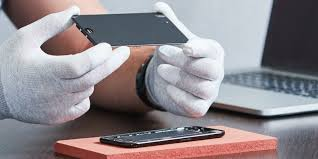
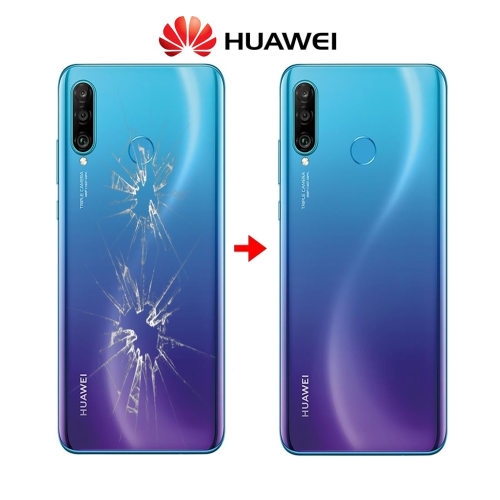

La reparación de celulares ha evolucionado de manera directa junto con el desarrollo tecnológico de los propios dispositivos. En los años 80 y principios de los 90, los teléfonos móviles eran equipos analógicos grandes, pesados y con estructuras internas relativamente simples
La mayoría de las fallas estaban relacionadas con componentes visibles y accesibles, por lo que el trabajo técnico se centraba en ajustes mecánicos, limpieza de contactos, cambio de antenas y soldaduras básicas en placas electrónicas de mayor tamaño.Con la expansión de los teléfonos digitales
marcas como Nokia y Motorola, los dispositivos comenzaron a reducir su tamaño y a integrar más funciones. En esta etapa, la reparación de celulares se enfocó principalmente en el reemplazo de pantallas LCD, teclados físicos, flexores, conectores de carga, micrófonos y baterías internas.
Los técnicos ya necesitaban mayor precisión, mejores herramientas y conocimientos más sólidos en electrónica básicamarcando un antes y un después con el lanzamiento del iPhone por parte de Apple.
la masificación del sistema Android desarrollado por Google. Los celulares dejaron de ser solo dispositivos de comunicación para convertirse en computadoras portátiles de alta complejidad. Esto implicó placas base con circuitos de alta densidad, chips soldados directamente a la tarjeta lógica
componentes cada vez más pequeños.la reparación de celulares se centra en procesos avanzados como la microsoldadura, el reemplazo de componentes SMD, la reparación de líneas en placa, el cambio de circuitos integrados y el reballing de procesadores y memorias. Además, el diseño
exige técnicas especializadas para despegar pantallas, trabajar con adhesivos industriales y manipular baterías integradas sin dañar otros componentes pasó de ser un oficio principalmente mecánico a convertirse en una especialidad técnica de alta precisión
Hoy requiere formación constante, herramientas profesionales y conocimientos avanzados en microelectrónica, todo impulsado por la creciente complejidad de los smartphones modernos sellado y modular de muchos equipos modernos.
Cambio de display

el mercado actual existen diferentes calidades de pantalla para celulares. Las pantallas LCD (TFT o IPS) son las más económicas y ofrecen buena imagen, aunque con menor contraste y negros menos profundos. Las OLED brindan colores más vivos, negros más intensos y mejor eficiencia
energética, ya que cada píxel emite su propia luz. Las AMOLED son una versión mejorada de OLED, con mayor brillo y mejor rendimiento, mientras que las variantes como Super AMOLED se consideran de gama alta por su mayor nitidez, contraste y calidad general de imagen.
Cambio de bateria

En el mercado de reparación de celulares existen diferentes calidades de baterías. Las (originales) son las fabricadas o certificadas por la marca del equipo, ofreciendo mayor seguridad, duración y rendimiento estable. Las (OEM) (fabricadas por el mismo proveedor que produce para la marca)
mantienen una buena calidad y desempeño similar original.Las (genéricas o compatibles) son más económicas, pero pueden tener menor duración, menor capacidad real y variaciones en seguridad y vida útil. Por eso, la calidad influye directamente en el rendimiento, la autonomía y la seguridad
del dispositivo.
Cambio de tapa trasera

En el mercado existen diferentes tipos de tapa trasera para celulares. Algunas vienen **solo como tapa independiente**, ideales para reemplazar daños estéticos, mientras que otras incluyen (la carcasa completa con marco)que facilita la instalación y mejora el ajuste.
También varían en material, como plástico, vidrio o metal, influyendo en la resistencia, el acabado y la calidad final de la reparación.